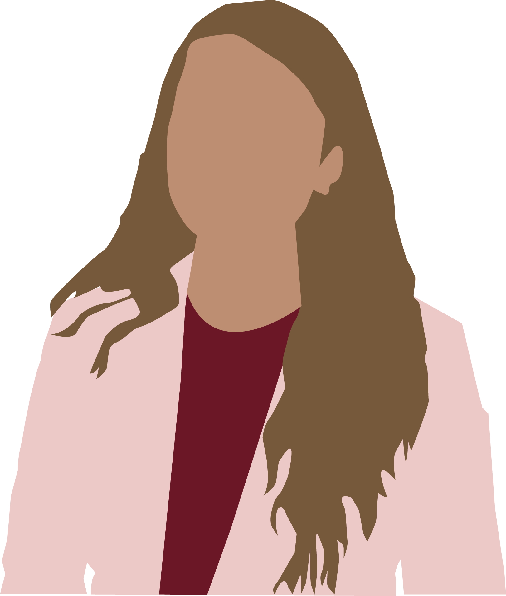

Hi! I am Vedanshi!
Bachelors in Computer Science and Business Administration
Software developer | Data scientist | Researcher

About me
I graduated with a Bachelor's in Computer Science and Business Administration from Northeastern University. I am from Mumbai, India. I am currently working on research on Design Spaces for Visualization for Communication and What is Visualization for Communication? An Analysis of VisComm Papers Over the Years with the very knowledgeable professor Ab Mosca and Gauge Equivariant Message Passing Neural Networks for Meshes with professor Robin Walters and PhD student John Park. I worked as a Data Scientist at LineVision for my last co-op.
I am very passionate about learning, exploring, and expanding my knowledge, which has motivated me to join and actively participate in a lot of clubs and organizations on campus. I have been a project lead for Generate Product Development Studio, the COO for Disrupt-The FinTech Initiative, a research scholar for Women’s Research and Engagement Network (WREN), a part of Multi-diverse Unified Leaders in the Technology Industry, Northeastern University Huskiers and Outing Club, Electric Racing, Women in Business, Women in Tech, Entrepreneurs Club, Animation Club, Code4Community, and Data Club. Additionally, I have been a Resident Assistant and a Teaching Assistant for Managerial Accounting, Foundations of Data Science, Information Presentation and Visualization, and Artificial Intelligence.
I am very passionate about learning, exploring, and expanding my knowledge, which has motivated me to join and actively participate in a lot of clubs and organizations on campus. I have been a project lead for Generate Product Development Studio, the COO for Disrupt-The FinTech Initiative, a research scholar for Women’s Research and Engagement Network (WREN), a part of Multi-diverse Unified Leaders in the Technology Industry, Northeastern University Huskiers and Outing Club, Electric Racing, Women in Business, Women in Tech, Entrepreneurs Club, Animation Club, Code4Community, and Data Club. Additionally, I have been a Resident Assistant and a Teaching Assistant for Managerial Accounting, Foundations of Data Science, Information Presentation and Visualization, and Artificial Intelligence.